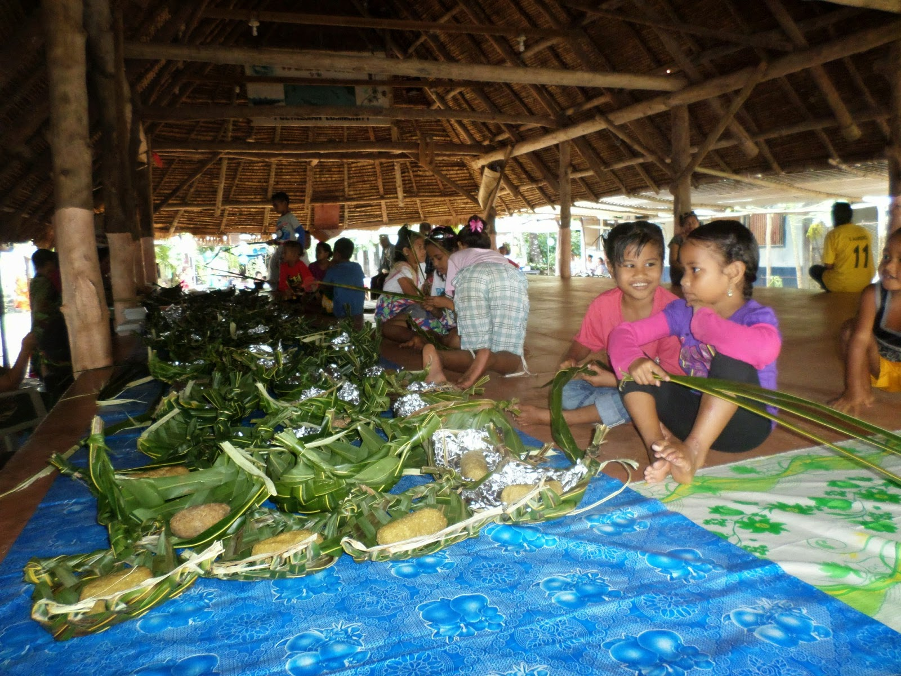

Kapingamarangi Thanksgiving Day is a time for us to reflect on all the things that we are thankful for in life. It's a day when family and friends come together to enjoy a delicious meal and create lasting memories. At Kapingamarangi, we believe that Thanksgiving Day is a special occasion that should be celebrated with joy and gratitude. Here's why you should join us this year for a memorable Thanksgiving Day experience.
Our Thanksgiving Day celebration is a true reflection of our culture and values. We believe in the importance of family and community, and we celebrate this by bringing people together to share a meal and connect with each other. Our celebration is open to all members of the community, regardless of age or background, and we welcome anyone who wishes to join us in the spirit of Thanksgiving.
At Kapingamarangi, we take pride in our food and hospitality. Our Thanksgiving Day menu is a feast for the senses, featuring an array of traditional dishes that are sure to please everyone's taste buds. From roasted ills to pounding taro and all kind of local foods, our menu is designed to bring people together and create a sense of warmth and comfort. The special thing about our menu is that we do have our very own dishes for our thanksgiving, we usually have roasted ills and pounding taros.
This traditional menu comes once a year, and it's very tasteful and fun to enjoy on thanksgivng day. It is our only local special dishes to serve on our thanksgiving day. It has its own meaning, for the taro- as a reminder for the labors of those yesterday for our blessings of today. And for the ills- is our king of the sea and for us to include it in the menu, as something to remind us the blessings of the sea. So however on our thanksgiving day we get ills and taro, serve them as a special menu of our very own thanksgiving day.
But Thanksgiving Day is more than just a meal. It's a time to reflect on the blessings in our lives and express gratitude for all that we have. At Kapingamarangi, we believe that gratitude is a key component of a happy and fulfilling life, and we encourage our guests to take time to reflect on the things they are thankful for. In addition to the meal, we have a variety of activities and events planned for Thanksgiving Day.
We have games and entertainment for children and adults alike, as well as cultural performances and demonstrations that showcase our unique heritage and traditions. Our Thanksgiving Day celebration is a true community event, and we strive to make it a memorable experience for everyone who attends.But our Thanksgiving Day celebration is about more than just having a good time. We believe that it's important to give back to our community and help those in needs, we can help ensure that everyone in our community has a warm meal and a place to call home on Thanksgiving Day.
In conclusion, Thanksgiving Day at Kapingamarangi is a celebration of family, community, and gratitude. We believe that it's important to come together and share a meal, connect with others, and express gratitude for all the blessings in our lives. Our celebration is open to all members of the community, and we encourage everyone to join us for a memorable and meaningful Thanksgiving Day experience. We hope to see you there!
